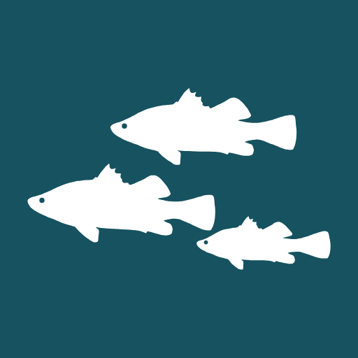

IBI Technology
IBI Technology
Mi Estanque
Calculadora piscícola · en Google PlayCuánto alimento dar hoy, a qué hora y de qué tipo.
La calculadora piscícola para pacú y tambaquí. Registras la biometría y la app calcula la ración del día, aunque no haya internet.
- Ración diaria
- Biometría
- FCA
- Sin internet